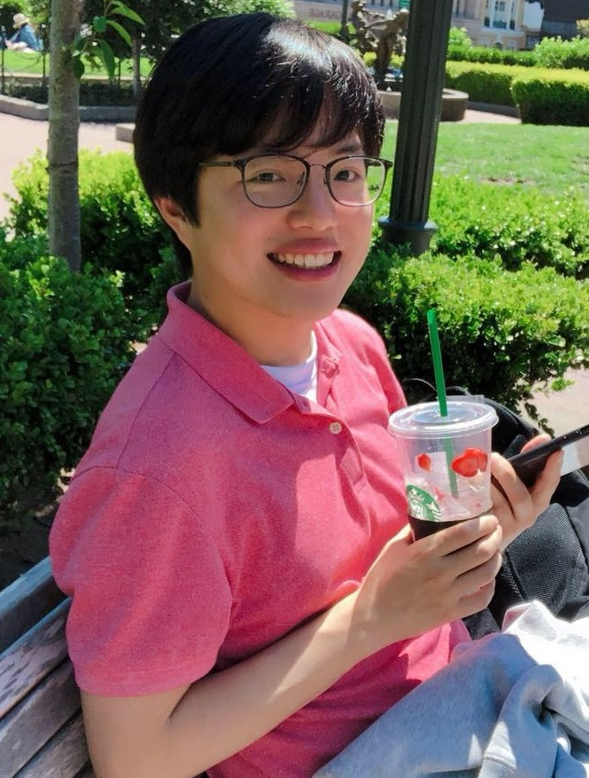

Talk Overview: AI for complex networks supports a wide range of applications, including web search, recommendation, advertising, and fraud detection, across the web, online social networks, and e-commerce platforms. However, it also poses unique challenges due to the massive scale but limited number of such networks, as well as their structural properties, such as permutation invariance. In this seminar, I will present our recent research on AI for complex networks, focusing on hypergraphs that represent interconnected group interactions. The seminar will cover embedding, generation, and modeling of large-scale group interactions. I will also briefly discuss broader directions, including complex networks for AI and AI for complex systems beyond networks.
Kijung Shin is an Associate Professor in the Kim Jaechul Graduate School of AI at KAIST. He received his Ph.D. in Computer Science from Carnegie Mellon University in 2019 and his B.Eng. in Computer Science and Engineering from Seoul National University in 2015. His primary research interests include complex networks, graph algorithms, and data mining. He has published more than 100 peer-reviewed papers in top-tier AI and data-related venues, and his work has been recognized with the IEEE ICDM Best Paper Award in 2025, the IEEE ICDM Best Student Paper Runner-up Award in 2023, and the ACM SIGKDD Best Research Paper Award in 2016. He also received the KIISE/IEEE Young Computer Researcher Award in 2025 and the Songam Distinguished Research Award in 2022.